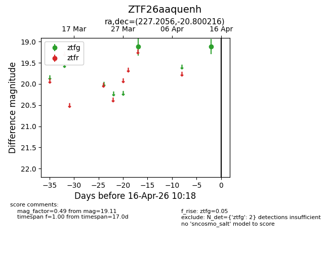
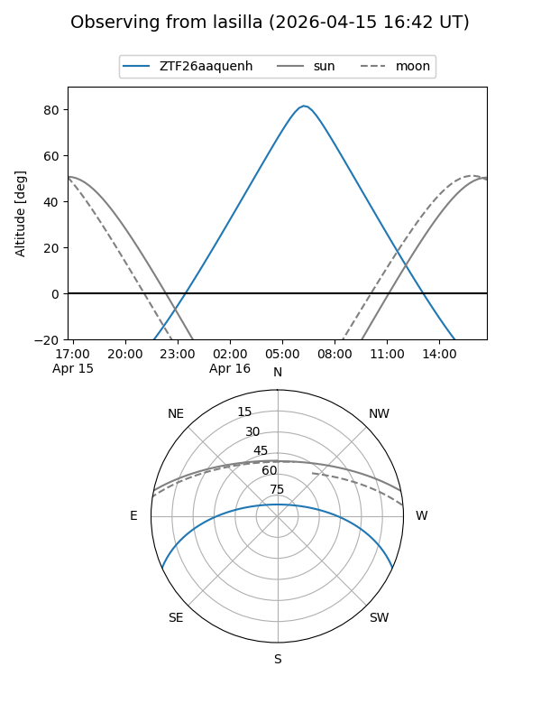
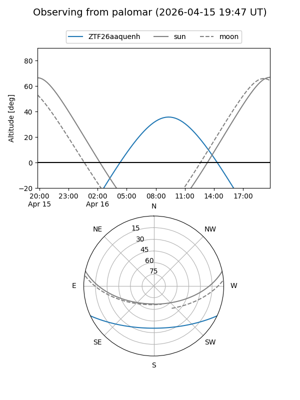

ZTF26aaquenh
Target ZTF26aaquenh at 2026-04-16 10:27
Aliases and brokers:
FINK: link
Lasair: link
ALeRCE: link
alt names
ZTF26aaquenh (ztf,fink_ztf)
Coordinates:
equatorial (ra, dec) = 227.2056,-20.80022
equatorial (HMS+DMS) = 15:08:49.34,-20:48:00.78
galactic (l, b) = (341.2253,+31.66806)
Flags:
Photometry:
last ztfg=19.11
2 ztfg detections
Lightcurve

Visibility


Additional plots